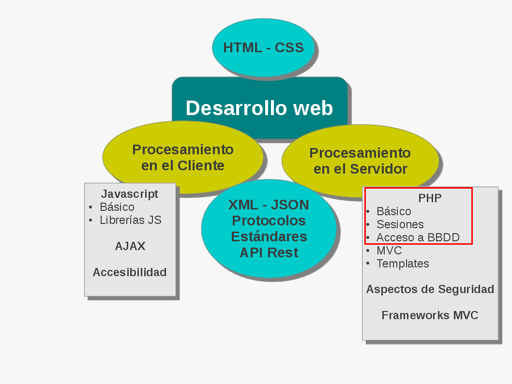
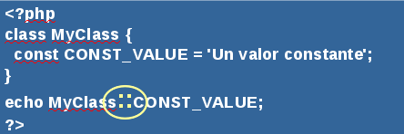
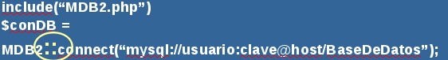
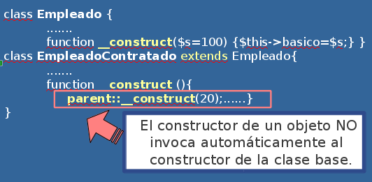
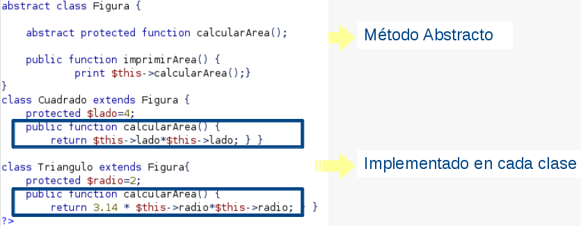
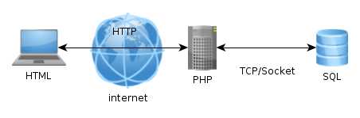
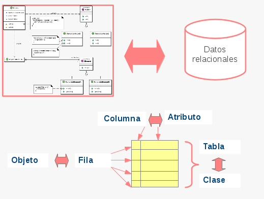

Proyecto de Software
Cursada 2014
Hoy seguimos con ...
Temario
- Repaso Clase Anterior
- PHP
- BBDD
- MVC
- Objetos
Cookies
- Básicamente, son “tokens” en el requerimiento HTTP que permite identificar de alguna manera al cliente en el servidor.
- Se almacenan en el disco del cliente.
- Muy usado por ser HTTP un protocolo sin estado
- Formato: nombreCookie=valor;expires=fecha;
- PHP las considera variables externas: Usa $_COOKIE (un arreglo con las cookies generadas)
- Mediante la función setcookie() es posible grabar cookies en el cliente.
- Veamos un ejemplo de uso de cookies
Sesiones
Es un mecanismo para conservar ciertos datos a lo largo de varios accesos.
- Permite registrar un número arbitrario de variables que se conservarán en las siguientes peticiones.
- Identificador: A cada visitante se le asigna un identificador único, llamado session id (identificador de sesión).
- Hay dos formas de propagar un identificador de sesión:
- Mediante cookies
- A través de la URL.
Sesiones
- Algunas funciones:
- session_start(): Inicializa los datos de una sesión.
- session_destroy(): Destruye los datos guardados en una sesión.
- session_id(): recupera o modifica el valor de la sesión.
- Debe ubicarse antes que cualquier salida al browser.
- Si no existe un session ID, session_start() lo crea e inicializa un arreglo vacío denominado $_SESSION.
Sesiones
- Los archivos con los datos de la sesión se generan en el servidor, usualmente en el directorio tmp del servidor.
- El cliente sólo guarda el session Id
Veamos el ejemplo de sesiones
POO en PHP
- PHP tiene soporte para construir clases.
- Es posible definir clases en una jerarquía con herencia simple.
- El constructor es class
Clases
- Clase Archivo:
class Archivo{
// variables de instancia
// métodos
}- Clase Archivo gráfico que hereda de Archivo:
class ArchivoGrafico extends Archivo{
}Instancias de una clase
Operador new $x = new nombreDeLaClase;
<?php class Persona { protected $nombre; public $dni; function verNombre(){ return $this->nombre;} } $per1=new Persona; $per2=new Persona; $per1->verNombre(); $per2->dni=$per1->dni; ?>
Ejemplo de clase en PHP
Ver clases
Visibilidad de las propiedades
- Público: Los miembros de clases declarados como public pueden ser accedidos desde cualquier lado
- Privado: Aquellos miembros definidos como private, únicamentede pueden ser accedidos desde la clase que los definió.
- Protegido: Los miembros declarados como protected, sólo desde la misma clase, desde las clases que hereden de ella y desde las clases parent.
(::) Resolución de Alcance
Este operador permite referenciar a las propiedades o métodos estáticos y constantes fuera de la la clase.
Varios
- Operador instanceof
<?php if ( $emple instanceof Empleado ) { echo "Esto es un empleado"; } ?>
- Enlaces estáticos parent, self y static. Ver Ejemplo
- Constructores: En PHP 5 estas funciones se llaman __construct(). Aunque por compatibilidad con versiones anteriores, si no se encuentra esta función se busca una cuyo nombre sea igual al de la clase.
Constructores
Destructores:
- Cuando se destruye la última referencia a un objeto, se invoca el método “destructor” de ese objeto.
- Este método se llama __destruct() y no recibe parámetros.
- Al igual que en el caso de los constructores, los métodos destructores de un objeto NO invocan automáticamente los destructores de las clase base. Deben invocarse explícitamente: parent::__destruct() en el cuerpo del método.
Miembros static
- Una propiedad declarada como static no puede ser accedida con un objeto de la clase. Sí a través de métodos estáticos.
Ejemplo de uso static en propiedades
- Ver fuente
Métodos abstractos
- Un método es abstracto si sólo declara el prototipo del método y no su implementación.
Clases Abstractas
- No tienen instancias.
- Es cualquier clase que contenga aunque sea un método abstracto.
Abstractos e implementaciones
- Ver Abstracciones
Interfaces
- Son estructuras similares a las clases abstractas.
- Pueden contener sólo métodos abstractos.
- Suelen verse como catálogos de métodos a implementar.
<?php interface unaInterface { function unMetodo( );} ?>
- Equivalente a:
<?php interface unaInterface { public abstract function unMetodo( );} ?>
Interfaces (Cont.)
- Una clase puede implementar una o más interfaces.
- Debe proveer una implementación para todos los métodos definidos en la interface.
<?php class MiClase extends ClaseBase implements unaInterface { //... } class MiClase implements unaInterface , otraInterface { //... } class OtraClase implements unaInterface { //... } ?>
Polimorfismo
- Distintos objetos comparten la misma interfaz y en ejecución se determina el código a ejecutar, dependiendo del contexto. No importa cómo lo implementa cada uno.
<?php $objetos=array(new Clase1(), new Clase2(), new Clase3()); foreach ($objetos as $unObj){ $unObj->metodoComun(); //redefinido para cada clase //... } ?>
Excepciones
- Existe una clase Exception
- Es posible levantar una excepción explícitamente:
- throw new Exception( "my message", 44 );
- Finaliza la ejecución del método y deja disponible el objeto Exception
- Por defecto produce un error fatal
- Para manejar las excepciones implementa un mecanismo try/catch
- Cualquier código que pueda levantar una excepción debe estar encerrado dentro de una cláusula try
- El bloque catch se utiliza para manejar la excepción
Excepciones
<?php try { -- sentencias que pueden producir una excepción -- } catch (Exception $e) { -- sentencias para manejar la excepción -- } ?>
Ver excepciones y excepcionesNuevas
Accediendo a Bases de Datos
Lenguaje SQL (Structured Query Language)
- Sentencias insert, update, select, etc....
- Ejemplos:
- select * from tabla where condición
- insert into tabla (campos) values (valores)
- update tabla set campo1='valor1' where condición
Pasos típicos
<?php //Conectarse a la BBDD $con = conectar_a_la_BBDD("mibdd","usuario", "clave"); // Armar la consulta $consulta = "SELECT * FROM AlgunaTabla where campo1 ='".$variable."'"; //Ejecutar la consulta $resultado = ejecutar_consulta($consulta); //Procesar resultados if (tengo_resultados($resultado) $campo =extraigo_datos($resultado,"nombreCampo"); ?>
Importante
MySQL: Motor de Base de Datos
SQL: Lenguaje de Consulta

Consejos
- Habilitar los logs de la manera más descriptiva posible
- Instalar alguna aplicación que nos permita acceder de manera menos complicada a la base de datos → PhpMyAdmin
MySQL
- El archivo más importante de MySQL es su configuración que la encontramos en /etc/mysql/my.cnf
- Por defecto el log esta deshabilitado por cuestiones de performance.
- Ejemplos de configuración avanzados: /usr/share/doc/mysql-server-5.1/examples
MySQL
Habilitar el Log de todas las transacciones:
- general_log_file = /var/log/mysql/mysql.log
- general_log = 1
Loguear consultas lentas y sin índices:
- log_slow_queries = /var/log/mysql/mysql-slow.log
- long_query_time = 2
- log-queries-not-using-indexes
PhpMyAdmin
- Interfaz de Administración de la Base de Datos MySQL
- Podemos exportar e importar a varios formatos
Acceso a MySQL con PHP
- Tipos de recursos: Hay dos tipos de recursos usados en el módulo MySQL.
- El identificador de enlace para una conexión de base de datos
- Un recurso que almacena el resultado de una consulta.
- Algunas funciones....
- mysql_connect(): Conecta a una base de datos
- mysql_select_db: Permite seleccionar una base de datos
- mysql_query(): Envía una sentencia SQL a MySQL
- mysql_fetch_row(): Busca un registro en el resultado de una consulta
- mysql_result(): Devuelve los resultados de una consulta
Acceso a BBDD – MySQL
- En PHP 5, el soporte para MySQL no se encuentra habilitado por defecto.
- La extensión mysqli es la recomendad que nos permite acceder a la funcionalidad provista por MySQL 4.1.2 o superior.
- Ver formas de utilizarlo en http://www.php.net/manual/es/mysqli.construct.php
Proceduralmente
<?php //conection: $link = mysqli_connect($db_host,$db_user,$db_pass,$db_base) or die("Error " . mysqli_error($link)); //consultation: $query = "SELECT nombre FROM usuarios" or die("Error in the consult.." . mysqli_error($link)); //execute the query. $result = $link->query($query); //display information: while($row = mysqli_fetch_array($result)) { echo $row["nombre"] . "<br>"; } mysqli_close($link); ?>
Acceso a la Base con mysqli
Ver accediendo
Objetos
<?php //conection: $con = new mysqli($db_host,$db_user,$db_pass); $con->select_db($db_base); //consultation: $query = "SELECT nombre FROM usuarios"); //execute the query. $result = $con->query($query); //display information: while($row = $result->fetch_row()) { echo $row[0] . "<br>"; } $result->close(); ?>
Más Motores

CUBRID | DB++ | dBase | filePro | SQLite |
Paradox | FrontBase | IBM DB2 | Informix | Sybase |
Ingres | MaxDB | MongoDB | mSQL | PostgreSQL |
Microsoft SQL Server | MySQL | Oracle OCI8 | Ovrimos SQL | Firebird/InterBase |
WE HAVE A PROBLEM!!
- ¿Qué pasa si queremos migrar de motor de BDD?
- ¿Qué pasa si queremos tener múltiples BDD conectadas?
Abstrayéndonos → Otra opción PDO
- La extensión Objetos de Datos de PHP (PDO por sus siglás en inglés) define un interfaz ligera para poder acceder a bases de datos en PHP.
- Hay que usar un controlador de PDO específico para cada servidor de base de datos.
- PDO proporciona una capa de abstracción de acceso a datos, lo que significa que, independientemente de la base de datos que se esté utilizando, se usan las mismas funciones para realizar consultas y obtener datos → Permitiría cambiar de motor de base de datos.
- Ver drivers
Con PDO
<?php try { $gbd = new PDO('mysql:host=localhost;dbname=test', $usuario, $pass); foreach($gbd->query('SELECT * from FOO') as $fila) { print_r($fila);} $gbd = null; } catch (PDOException $e) { print "¡Error!: " . $e->getMessage() . "<br/>"; die(); } ?>
Con PDO ejemplo 2
<?php $status=$_GET["status"]; try { $cn = new PDO("mysql:dbname=base;host=localhost","user","pass"); $query = $cn->prepare("SELECT * FROM usuarios WHERE status=?"); $query->execute(array($status)); while($row = $query->fetch()) { echo $row['nombre']; } } catch(PDOException $e){ echo "ERROR". $e->getMessage(); } ?>
Ver ejemplo con pase de parámetro
Ver
Comparando
- A mayor abstracción menos control .
- Al abstraernos es posible que se compliquen algunas funciones propias del motor que queremos usar.
- ¿La abstracción es necesaria?
- Menos control con PDO que con mysqli.
- Algunas bases no están disponibles con PDO y hay que usar si o si el dirver específico. Ver http://www.php.net/manual/es/pdo.drivers.php
Una vuelta de rosca más->ORM
ORM - Object-Relational Mapping
- Mapeo de Objetos a Base de Datos Relacionales.
- Permite acceder a una base de datos relacional como si fuera orientada a objetos.
- Transforma las llamadas a los objetos en consultas SQL, que permiten independizar el motor de BD utilizado en la aplicación.
- De acuerdo a la implementación se utiliza una sintaxis diferente.
¿Por qué?
- BBDD relacionales
- Datos escalares: números, cadenas de texto,etc…
- Aplicaciones orientadas a objetos
- Objetos con propiedades y métodos
- ¿Problema?
- Convertir los objetos en datos escalares para grabar los datos en la Base de Datos y volver a convertirlos en objetos al recuperarlos.
ORM
- Ventajas
- Abstracción a la BBDD
- Reutilización de código
- Desventajas
- Otra capa intermedia
- Otro lenguaje de consulta
- Algunos ORMs
- Propel
- Doctrine
- LinQ
- Active Record
Referencias
- PHP -> http://php.net
- PhpMyAdmin -> http://www.phpmyadmin.net
- Lenguaje SQL -> http://www.w3schools.com/sql/default.asp
- MySQL -> http://dev.mysql.com/doc/
- PDO -> http://www.php.net/manual/es/class.pdostatement.php
- Mysqli -> http://php.net/manual/es/mysqli.prepare.php